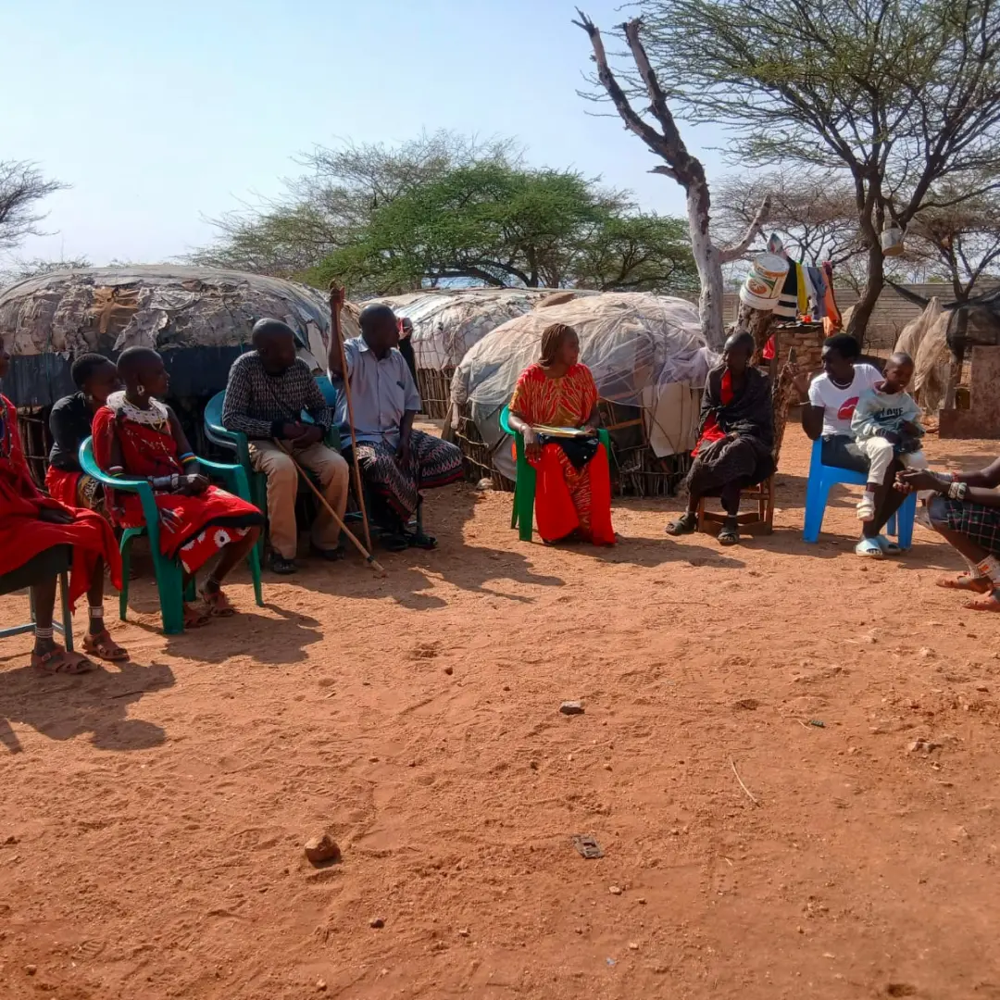

Integrity & Transparency
We ensure strict financial accountability and clear communication across all programs.
WHO WE ARE
Northern Resilience Initiatives is dedicated to spearheading community-led strategies that enhance adaptation capabilities, build sustainable infrastructure, and empower local leadership across northern ecosystems.
OUR PURPOSE
Northern Resilience Initiatives stands at the forefront of community-driven transformation, combining native ecological wisdom with modern climate mitigation frameworks.
Our commitment ensures that vulnerable regions are equipped with practical tools for disaster preparedness, landscape restoration, and enhanced food security to build a self-sustaining future for generations to come.

ON THE GROUND
We spend time in communities — sitting under trees, hearing stories, understanding challenges around water, livelihoods and leadership. Real change begins with real conversations.


WHAT GUIDES US
We ensure strict financial accountability and clear communication across all programs.
We prioritize native wisdom, placing indigenous leadership at the core of our strategy.
We design interventions with long-term adaptability to secure future generations.
BUILD WITH US